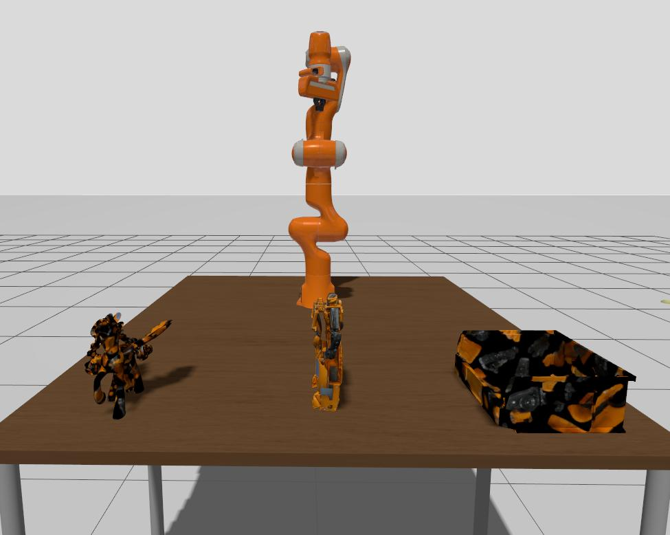
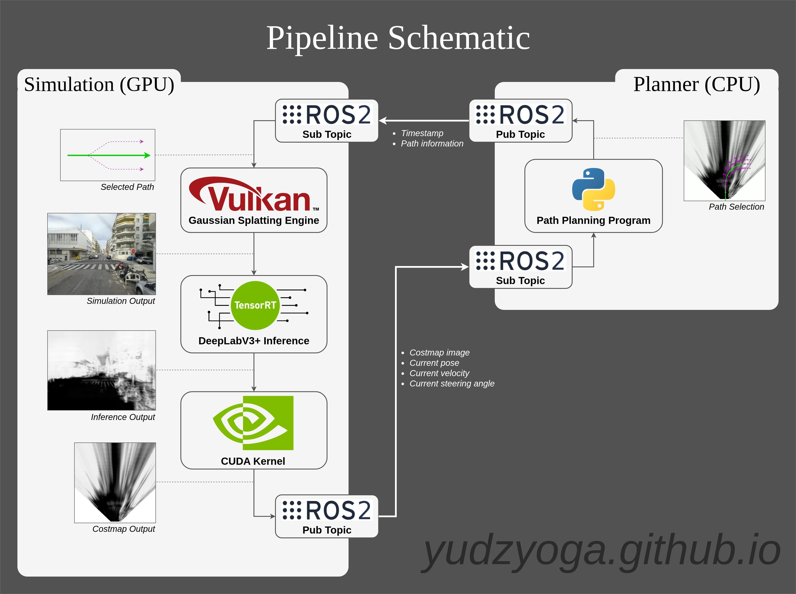

Project Overview
Showcase of all the features inside the simulator.
Short Demo
A short running sequence of the simulator, visualized using Rerun.
Technical Documentations
The Challenge in Robotics Simulation
Building a complex robotics system is highly challenging. Aside from requiring an interdisciplinary technical implementation, developers face numerous pitfalls throughout the design, production, and testing phases. Generally, validation is performed in two ways. It may be physical testing on an expensive, custom hardware rig or deployment within a sandbox simulation environment. The most widely adopted sandbox for robotics is Gazebo as shown in Figure 1, which provides core physics and control functionalities to test autonomous algorithms. Among these, simulating a color camera sensor is critical for vision-based recognition and navigation. However, generating high-performance photorealistic camera renders at a low computational cost remains a massive bottleneck.
As a simple analogy, expecting a traditional simulator to produce cinema-grade photorealism in real-time creates a computational challenge due to running a movie-industry path tracer at 60 frames per second (FPS), which is nearly impossible for any consumer-grade hardware. Currently, standard simulation relies on simplified mesh-based rasterization, which struggles to replicate real-world environments accurately without inducing a massive rendering overhead that throttles real-time loop execution.

Paradigm Shift: Neural Radiance Fields (NeRF) and 3D Gaussian Splatting (3DGS)
In 2022, NeRFs (Neural Radiance Fields (NeRF) were first introduced high-fidelity, photorealistic scene reconstruction and view-dependent imaging by implicitly optimizing how light interacts within a real-world environment. While this marked a massive milestone of research in 3D reconstruction, the paradigm shifted entirely in 2023 with the introduction of rasterization-based 3D Gaussian Splatting (3DGS). It was presented by one of the co-authors during my master's at Saarland University, and I suddenly realized possibilities of implementation beyond what traditional use cases for 3D reconstruction can bring. It can be used for high-performance rendering with low computational cost, thus advancing the developments of real-time vision-based applications that require photorealistic perception simulation.
Project Objective
With all the challenges in robotics and advancements in 3D reconstruction research, I started to look into making a “fun-yet-useful” project that presents a proof-of-concept (PoC) to demonstrate the feasibility and performance of integrating rasterization-based radiance fields into real-time pipelines. The primary goal is to build a basic functional prototype, verify that a Gaussian splatting pipeline can successfully provide photorealistic renders to help the vehicle navigate the virtual world, and identify practical areas for future improvements. Additionally, I will also evaluate current capabilities and define clear pathways for future optimization: what it can do, what can’t it do yet, and what it’s best used for. For anyone interested in exploring more general knowledge of NeRFs and Gaussian Splatting, here are the main project pages and some cool videos on YouTube that you might find interesting to watch.
- NeRF Representing Scenes as Neural Radiance Fields for View Synthesis
- 3DGS 3D Gaussian Splatting for Real-Time Radiance Field Rendering
The Technology Stack
In 2022, NeRFs (Neural Radiance Fields (NeRF) were first introduced high-fidelity, photorealistic scene reconstruction and view-dependent imaging by implicitly optimizing how light interacts within a real-world environment. While this marked a massive milestone of research in 3D reconstruction, the paradigm shifted entirely in 2023 with the introduction of rasterization-based 3D Gaussian Splatting (3DGS). It was presented by one of the co-authors during my master's at Saarland University, and I suddenly realized possibilities of implementation beyond what traditional use cases for 3D reconstruction can bring. It can be used for high-performance rendering with low computational cost, thus advancing the developments of real-time vision-based applications that require photorealistic perception simulation. Below are the technology stacks being used in the schematics as shown in Figure 2.
- Vulkan
- Real-time rendering engine. It handles the rasterization pipeline for multi-anchored 3D Gaussian splatting.
- TensorRT
- Real-time and optimized neural network inference, executing semantic segmentation directly on the rendered camera frames.
- CUDA
- High-performance computing backbone, enabling a zero-copy memory interop pipeline with Vulkan and accelerating custom parallelized kernels.
- ROS2
- The core robotics communication middleware to pass data between low-level control loops and high-level planning algorithms.

The Closed Loop Pipeline: How it works
The entire system operates as a closed-loop pipeline split between two main applications: the Simulation Engine (low-level) and the Path Planner (high-level).
The Low-Level Simulation & Control Loop
The cycle begins when the simulation engine receives the optimal trajectory information from the planner, which consists of path calculation timestamp, target velocities, and steering angles mapped across a future timeline. Inside the Gaussian Splatting engine, a temporal interpolation algorithm uses the current timestamp to interpolate the exact control parameters (target velocity and steering angle). A local PID (Proportional-Integral-Derivative) controller processes these targets, immediately updating the simulation’s movement vector. As the virtual robot moves, Vulkan updates the viewing perception in real-time.
The High-Speed Perception & Mapping Pipeline
With the implementation of the Vulkan-CUDA memory interop layer, TensorRT can directly read the frame out of shared VRAM to achieve a zero-copy pipeline with zero CPU overhead. Next, custom parallelized CUDA kernels process the raw semantic segmentation output, mapping out feature information to final feature data, and instantly remapping the perspective data into a flat, top-down 2D costmap. This costmap array is packed and published over ROS2 to the planning module.
The High-Level Path Planning Loop
On the planning side, the node processes the incoming costmap and processes it through a Frenet Optimal Path planner. By evaluating generated trajectories in a localized coordinate frame, the planner samples multiple trajectories, scores them against the costmap values, and selects the path with the lowest cost. This best path is stamped with a precise generation timestamp and sent back across ROS2 to the simulation engine, successfully completing the high-performance, real-time closed loop.
Short Introduction to Gaussian Splatting
3D Gaussian Splatting (3DGS) reconstructs environments by representing the scene using millions of 3D Gaussian primitives. It utilizes traditional computer graphics concepts that rely on the rasterization method. By leveraging hardware-accelerated rasterization with Vulkan, 3DGS achieves extreme real-time framerates required for performance-critical applications like gaming, AR/VR, and real-time simulation solutions.
To avoid reinventing the wheel and spending months writing low-level Vulkan boilerplate, I built my viewer directly on top of the open-source architecture of vk_gaussian_splatting [1], which provides an excellent foundation for managing raw GPU memory buffers. Choosing Vulkan over the original implementation (CUDA) was an architectural choice. The original 3DGS code was written entirely in CUDA, which treats the GPU as a massive parallel GPGPU (General-Purpose GPU) compute engine, rather than a hardware-accelerated rasterization pipeline like Vulkan. As a specialized graphics API for rendering applications, porting the rasterization pipeline to Vulkan shaders enables fixed-function hardware sorting and vertex interpolation to improve rendering performance on consumer hardware. The video above showcases each stage within the Vulkan engine in processing 3D Gaussian primitives that consist of three main steps:
Compute Shader
The compute shader runs in parallel for every gaussian primitive in the database. It transforms each gaussian’s center into screen space and perform frustum visibility check. If a gaussian is on-screen, it increments global counter and stores its ID in a global visibility index list. It also converts the depth from float to uint32 for faster processing. The stored depth will be arranged by high-speed GPU radix sort for alpha blending.
Vertex Shader
For every visible splat (projected gaussian into screen), the vertex shader receives its position coordinate and unique splat ID. It fetches the corresponding 3D covariance matrix, diffuse color, and spherical harmonics (SH) coefficients. Each primitive will be enclosed within a quad (rotated bounding box) that is represented using two triangle primitives and mapped to a normalized [-1, 1] coordinate system. To simplify the calculation of gaussian contribution, the UV coordinate space between the vertex (warped) and fragment shaders are decoupled. The original RGB color of the splat is calculated using SH coefficients before color interpolation.
Fragment Shader
The fragment shader handles the pixel-level evaluation. It receives interpolated local position coordinates inside the warped quad and directly performs a perimeter clipping validity check if the corresponding splat is within the ellipse boundary (dist < 8). If it’s valid, then the shader calculates the point’s opacity using the simplified 2D gaussian distribution formula exp(-0.5 * dist) * alpha . This ensures smooth alpha blending along the edges of every splat for photorealistic reconstruction.
Rendering Multi-Anchored Gaussian Splatting
Memory Optimization via Spatial Partitioning
Rendering large-scene 3D gaussian splatting environments presents a massive memory bottleneck. A typical scene containing millions of primitives easily requires hundreds of megabytes to several gigabytes of VRAM. Scaling this technology to capture the entire city blocks on consumer hardware requires strict pipeline optimization for both training and inference.
Several research papers go in the direction of Level of Detail (LOD) frameworks that optimize Gaussian primitives into coarse and fine representations depending on camera distance. Although it works in some scenarios, it does not align with autonomous driving simulation constraints. In a very simple scenario where we only have a single front camera, the vehicle primarily requires high-fidelity geometry for the upcoming road and completely ignores the environment left far behind. This specific constraint presents an opportunity to implement a spatial partitioning system, basically splitting the entire city block into a sequence of smaller sub-segments that are centered around “Anchors”, which can be loaded and unloaded dynamically from host RAM to device VRAM. This pipeline ensures flat and optimized VRAM consumption regardless of how far the driving trajectory is.
On-The-Fly Reconstruction
The primary inspiration for this segment-based loading comes from the architecture outlined in On-The-Fly-NVS [2] paper implementation linked below. Their framework reconstructs the 3D scene dynamically as the agent explores the environment, similar to how a traditional SLAM pipeline works. In this implementation, I directly use pre-calibrated COLMAP camera pose to ensure correctness, but it also supports camera pose estimation to triangulate future poses on the fly.
Unlike traditional 3DGS pipelines that rely on Structure-from-Motion (SfM) sparse point clouds for initialization, this pipeline utilizes monocular depth estimation through Meta’s Depth Anything V2 model. The system generates dense depth maps directly from raw RGB data and uses them to project and spawn new gaussians precisely where geometry exists in the physical world, reducing the number of multiview images needed to initiate accurate inverse rendering.
To simplify the development, I adopted this training pipeline with aggressive optimizations to make it compatible with my local hardware limits (4GB VRAM). Operating under these severe constraints required some hyperparameter tuning in image downsampling (reducing the input frame resolution), spherical harmonics (SH) capping (level 0 to eliminate memory overhead), and iteration limits (preventing the system from over-allocating primitives). I also modified the training pipeline to avoid loading heavy models, effectively reducing VRAM consumption during training. As a simple prototype simulator just to validate what is possible on limited hardware, the reconstruction was explicitly scoped to map the driving corridor of the street using a single front camera. To achieve cinematic photorealism across an entire urban grid requires a larger computational budget, but this current training and inference successfully produced partitioned segments that seamlessly cover the city block.
Runtime Performance Result
By introducing these training-time constraints and partitioning the city block into spatial segments, we achieve performance and memory advantage at runtime. Instead of forcing the engine to use a monolithic, multi-gigabyte `.ply` scene file, the Vulkan loop simply monitors the vehicle’s real-time coordinates relative to nearby anchor points, as demonstrated in Video 5. To eliminate latency spikes and ensure smooth transitions while swapping segments, the engine utilizes a double-buffering strategy. While the primary (current) buffer renders two nearby active anchor segments, a secondary staging buffer asynchronously pre-loads the upcoming segment in the background. Once the vehicle’s position triggers an anchor change, the engine executes a rapid memory pointer swap, achieving a seamless handoff with zero frame drops.
The implementation was benchmarked locally on an NVIDIA GeForce RTX 3050 Laptop GPU (4GB VRAM), resulting in highly efficient results:
- Framerate Scalability
- The engine achieves 90 FPS at 1080p, scaling up to 210 FPS at 480p for high-velocity simulation loops.
- Memory Footprint
- Active graphics VRAM consumption hovers around 550 MB (this footprint excludes the TensorRT model, which will be elaborated in Chapter 4).
With further advanced Vulkan memory optimization methods, this memory footprint can be reduced even further, enabling low-tier GPU hardware to run the simulation smoothly. These results prove that multi-anchored gaussian splatting can deliver high-performance, real-time rendering on standard consumer hardware. It opens significant possibilities in real-time simulation for low-end GPU devices.
Inspiration
Ever since discovering autonomous driving systems, I have been fascinated by the complex challenges of processing real-time sensor streams to execute vehicle control algorithms. The technology stacks are uniquely multidisciplinary, from robotics perception, simultaneous localization and mapping (SLAM), and path planning to even covering large language model (LLM) inference. Looking from a robotics background, there are numerous things that could go wrong, hence the need for an advanced simulation system to validate everything before it goes into physical hardware.
To explore these domains without any physical risk, utilizing a simulation is one of the main requirements. In this industry, the open-source CARLA simulator is one of the most widely known for simulating self-driving cars. It was built on Unreal Engine 4 and 5, which also provide near-photorealistic rendering with a suite of sensors, including IMUs, LiDAR, odometry, and high-resolution cameras.
However, running such an advanced simulator presents severe resource challenges, as it frequently demands well over 4GB of VRAM alongside massive RAM and disk space overhead. This inspires me to try finding solutions through Gaussian splatting (previous chapter) and optimized neural inference with a lower amount of unnecessary computational overhead.
Zero-Copy Vulkan and CUDA (Memory Interop)


Traditional simulation setups pull the rendered frame down to the CPU just to pass it over to an AI model for inference as shown in Figure 3, which causes unnecessary data lag as the inference itself is also performed inside the same GPU.
My solution cuts out this middle stage entirely as shown in Figure 4. Instead of treating graphics and AI inference as isolated applications separated by the CPU, my engine allocates a singular block of physical VRAM for each render image. Using external memory handles via a Vulkan-CUDA interop pipeline, the Vulkan graphics pipeline maps its image buffers directly into a virtual memory space that NVIDIA CUDA can reference simultaneously.
The moment the Vulkan shader finishes rendering the gaussian splatting scene, the pixels are already exactly where TensorRT needs them to be. As soon as the previous execution cycle clears, the engine queues the next frame’s data preprocessing and triggers TensorRT asynchronously. Keeping the entire workflow locked firmly inside VRAM produces an instant, zero-copy inference pipeline.
However, the architecture on the left is not all bad. This particular example makes it possible to simulate even more advanced rendering and inference scenarios. For example, the scene could be rendered in AMD Radeon, and the neural inference could be performed on an NVIDIA CUDA graphics card. Hence, neither process will interfere with the other. Although moving the data through the CPU could incur some slowdowns along the way, it’s still an advanced approach to optimise all available resources.
TensorRT Parallel Inference

To achieve real-time rendering and autonomous vehicle control, the system isolates the simulation graphics and control loop from the deep learning computer vision inference. A core challenge arises from a fundamental frequency mismatch. The Vulkan rendering engine and vehicle control loops need to operate at an ultra-high frequency (200 FPS), where the TensorRT inference pipeline executes at a lower frequency (~60 FPS). In a shared-memory architecture between Vulkan and CUDA, it requires coordinating cross-API execution boundaries, such as Vulkan-CUDA external semaphores. It serves as a GPU-GPU synchronization mechanism, triggering another process immediately after the current one completes. However, its implementation across mismatched frequencies forces the high-speed loops to stall and create a severe frame-rate bottleneck.
To avoid this, I utilize a simple variable switching combined with a multi-buffered color buffer layout. As shown in Figure 5, during the brief sub-milisecond window when the CUDA format conversion is actively preprocessing a VRAM texture, the state machine programmatically routes Vulkan’s active rendering pass to another index. Hence, this approach guarantees zero-copy data integrity and avoids tearing/race conditions between in-flight frames.
Ideally, such a pipeline should end up with 200 FPS Vulkan rendering and 60 FPS TensorRT inference. However, even with pipeline and stream separation, launching the deep learning inference pass pins the physical GPU utilization at 100%. Because TensorRT heavily saturates hardware’s Streaming Multiprocessors (SMs) and Tensor Cores, the GPU’s internal hardware scheduler is forced to time-slice resources. The concurrent Vulkan rasterization queues experience hardware-level starvation, temporarily dragging the main rendering framerate down to match ~60Hz inference compute bound. Hence, both simulation and inference results are produced at 60 Hz, which is satisfactory enough for now but can be improved in the future.
Feature Engineering
Semantic segmentation assigns a categorical class label to every individual pixel in an input image. For this pipeline, I use a pre-trained DeepLabv3+ network on Pascal VOC & Cityscapes datasets, optimized and quantized with an FP16 precision execution engine using the TensorRT model compiler. Rather than focusing on the internal layer mechanics of the network, this subsection details the custom feature engineering developed to transform the raw model outputs into road segmentation results.
While retraining the model or fine-tuning its final layer to output a single-channel grayscale costmap is the most common approach, I decided to keep the architecture as-is and just focus on playing around with the feature vector to produce similar results. Looking into the list of the dataset's labels, the only useful one for road segmentation is index 0, and I will categorize other labels between 2 and 18 (except 9) as obstacles.
At the final layer of a standard semantic segmentation pipeline, networks typically employ an argmax function to force a categorical decision on what object a pixel represents. While visually clean, this approach often discarded classification uncertainty, which is still important to use for robot navigation. To preserve this, I engineered a custom feature computation pipeline with three stages as follows:
Maximize Multi-Channel Information
A maximization across features inside obstacle channels ensures capturing the single highest local threat so that the cost is high and the pipeline learns how to avoid it.
Clamping and Normalization
Both the extracted obstacle metric and the baseline road channel are clamped at their thresholds, then scaled smoothly into a normalized [0, 1] probability space.
Blending Pipeline
Combine both normalizations and the inverted result (for the road), resulting in a single grayscale output that is usable for the costmap.
To clearly illustrate this logic prior to its parallel CUDA kernel implementation, the algorithm can be represented by the following Python pseudocode:
import numpy as np
# 0. Grab your raw data (assume its shape is (19, height, width))
data_road = inference_data[0, :, :]
# 1. Skip channel 0, 1 and 9 for obstacle (0-road, 1-sidewalk, 9-terrain)
obstacle_channels = np.concatenate([inference_data[2:9, :, :], inference_data[10:19, :, :]], axis=0)
data_obstacle = np.max(obstacle_channels, axis=0) # Handled completely in parallel in CUDA!
# 2.a. Clip and Min-Max Normalize Obstacles [2.5, 15.0]
clip_obs = np.clip(data_obstacle, 2.5, 15.0)
data_obstacle_norm = (clip_obs - 2.5) / (15.0 - 2.5)
# 2.b. Clip, Normalize, and Invert Road [2.5, 10.0]
clip_road = np.clip(data_road, 2.5, 10.0)
data_road_norm_inverted = 1.0 - ((clip_road - 2.5) / (10.0 - 2.5))
# 3. Data Blending (90% weight on road absence)
ratio = 0.9
final_cost = (ratio * data_road_norm_inverted) + ((1.0 - ratio) * data_obstacle_norm)Bypassing a categorical classification, this custom kernel yields a smooth costmap probability where traversable road surfaces have the lowest cost, hence the darker color. In the next step, this road segmentation result will be transformed into a front-facing Bird's-Eye-View (BEV) costmap used by the path planner to evaluate its optimal driving path.
Bird's-Eye-View (BEV) Mapping
Transforming the resulting grayscale costmap into an orthographic, top-down Bird’s-Eye-View (BEV) representation can be performed through three different paths:
Planar Homography Transformations (Perspective Warping)
This approach utilizes a 2D homography matrix via OpenCV’s perspective warp mapped from explicit source and destination UV anchor pixels. Although it is trivial and straightforward, it relies on a fragile assumption that the ground should remain perfectly flat relative to a completely static camera. In a real-world driving scenario, vehicle pitch, roll, and road bumps instantly change the homography matrix, introducing severe spatial distortions.
Forward Ray-Plane Intersection (Ray-Casting)
This method is inspired by computer graphics' ray-plane approach to find an intersection of a ray out of the camera center for every pixel in the raw perspective map. Under assumed vehicle height, we will directly acquire the exact position a ray intersects and map it out to the BEV result. However, it causes severe pixel-overlapping artifacts (aliasing) while leaving sparse gaps in the BEV that look like unmapped holes. As an addition, the massive ray-intersection computation overhead makes it completely impractical for real-time loops.
Inverse Grid-Sampling Map (Selected Approach)
This is a deterministic solution that optimized both data integrity and execution speed. Instead of projecting pixels forward from the camera, the algorithm defines the boundaries of the final 500 x 500 BEV canvas directly, where each pixel maps to a spatial region ranging from 0 to 40 meters across the lateral and longitudinal axes. For each coordinate in the target BEV grid, the pipeline calculates its corresponding coordinate back in the camera’s perspective frame using extrinsic and intrinsic camera matrix transformation. Since the movement in this implementation is assumed to be in 2D, the lookup index can simply be stored to achieve low latency and real-time BEV costmap mapping. A Python implementation of this approach using NumPy and OpenCV is actually sufficient for prototyping. However, I implemented the same approach through the CUDA API to push the maximum performance of the hardware.
The path-planning framework and its controller are fully implemented and running smoothly within the engine, as shown in the video. However, the mathematical analysis and explanation regarding the approach of the Frenet optimal path planner and its pure-pursuit controller still need a lot more time to write. Therefore, I decided to release this written documentation and update the info a bit later. The main functionalities of this simulation have been achieved through the previous two chapters, and the path planner only serves as a use case of this simulation engine.
If you want to look more into the approach, consider looking into this following documentations as well:
This project demonstrates the feasibility of utilizing a 3D Gaussian Splatting approach to power a lightweight, real-time autonomous driving simulation. By natively combining low-level Vulkan rendering loops with CUDA-accelerated TensorRT inference pipelines, the system achieves highly scalable performance directly on consumer-grade hardware. While the current architecture serves as an optimized sandbox simulation, improvements in its training and inference pipelines will extend the engine as an open-source asset, offering a highly accessible experimentation platform for robotics hobbyists, researchers, and students.
If you find this documentation beneficial and you have some questions, corrections, or suggestions, feel free to chat and point out my mistakes.